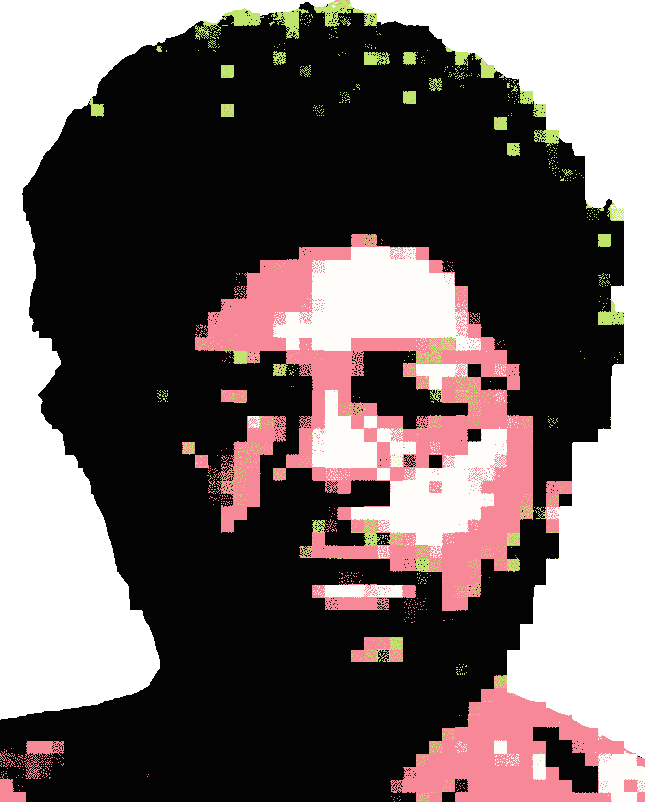

Hello. This is unReality Gallery — where the familiar unravels into a dreamscape of abstraction and raw emotion. This space was manifested by Brenden Davis, whose art redefines identity and the intricacies of the subjective experience, every piece here challenges the boundaries of perception. Would you like to enter?